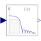

FIRbyCoefficientsFIR filter defined by coefficients |

|
Information
This information is part of the Modelica Standard Library maintained by the Modelica Association.
This block computes the output y as a linear combination of the input u and of its past values (= FIR filter):
y(i) = a[1]*u(i) + a[2]*u(i-1) + a[3]*u(i-2) + …
where y(i) and u(i) are the values of y and u at clock tick i and a[:] are the filter coefficients.
At the first clock tick i=1 the past values are filled with u at this clock tick (= steady state initialization).
Parameters (1)
| cBufStart |
Value: ones(size(a, 1) - 1) Type: Real[size(a, 1) - 1] Description: The u-buffer [u(i-1), u(i-2), ..., u(size(a,1)-1)] is initialized with u(i=1)*cBufStart |
|---|
Inputs (1)
| a |
Default Value: {1 / 2, 1 / 2} Type: Real[:] Description: Coefficients of FIR filter |
|---|
Connectors (2)
| u |
Type: RealInput Description: Connector of clocked, Real input signal |
|
|---|---|---|
| y |
Type: RealOutput Description: Connector of clocked, Real output signal |
Used in Examples (1)
|
Modelica.Clocked.Examples.Elementary.RealSignals Example of an UpSample block for Real signals combined with FIR filter blocks |